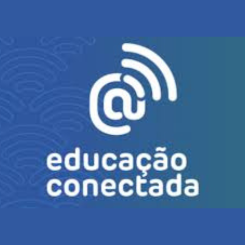
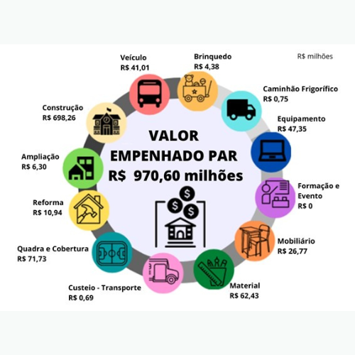
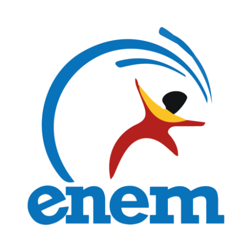

Programas e Projetos da escola
-
Programa de Inovação Educação Conectada (PIEC)
O Programa de Inovação Educação Conectada (PIEC) é uma iniciativa importante para melhorar a qualidade da educação básica no Brasil, focando no uso de tecnologias digitais. Vamos entender um pouco mais sobre ele:
Origem e Estrutura Legal
- Instituição: O PIEC foi criado pelo Decreto 9.204, de 23 de novembro de 2017.
- Fortalecimento Legal: Em 1º de julho de 2021, o PIEC se tornou uma política oficial com a publicação da Lei nº 14.180. Essa lei garante segurança jurídica e fornece diretrizes claras para a implementação do programa.
Execução
- Responsabilidade: A execução do PIEC é realizada pela Diretoria de Articulação e Apoio às Redes de Educação Básica. Dentro dessa diretoria, a Coordenação-Geral de Tecnologia e Inovação da Educação Básica (CGTI) é a principal responsável pelo programa.
Objetivos do PIEC
- Universalização do Acesso à Internet: O PIEC visa garantir que todas as escolas tenham acesso à internet de alta velocidade.
- Uso Pedagógico de Tecnologias Digitais: Além de fornecer acesso à internet, o programa incentiva o uso de ferramentas digitais como parte do ensino, ajudando professores e alunos a integrar essas tecnologias no aprendizado diário.
Importância
- Melhoria da Qualidade da Educação: Com internet de alta velocidade e tecnologias digitais, as escolas podem oferecer melhores recursos educacionais.
- Inclusão Digital: Garante que todos os alunos, independentemente de onde vivam, tenham acesso às mesmas oportunidades tecnológicas.
- Preparação para o Futuro: Equipar os alunos com habilidades digitais é essencial para prepará-los para o mercado de trabalho e a vida moderna.
O Programa de Inovação Educação Conectada é um passo significativo para modernizar a educação no Brasil. Com suporte legal robusto e uma estrutura dedicada à sua implementação, o PIEC tem o potencial de transformar a maneira como a educação é conduzida, garantindo que todos os alunos tenham acesso às ferramentas digitais necessárias para um aprendizado eficaz e contemporâneo.
Situação Atual
Embora uma escola tenha sido selecionada pela rede para participar do programa, o projeto ainda não foi iniciado.
Controle Social: É fundamental que a comunidade escolar, pais, alunos e a sociedade em geral acompanhem e cobrem a implementação desse projeto. O controle social é um elemento chave para garantir que os recursos e iniciativas públicas sejam efetivamente realizados. Participar das reuniões escolares, acompanhar as decisões dos gestores e demandar transparência são ações essenciais para que projetos como o PIEC se concretizem.
-
Plano de Ações Articuladas (PAR)
O Plano de Ações Articuladas (PAR) é uma importante estratégia do governo brasileiro para melhorar a educação no país. Ele faz parte do Plano de Metas Compromisso Todos pela Educação, que foi instituído pelo Decreto nº 6.094, de 24 de abril de 2007. Vamos entender melhor o que é o PAR e como ele funciona.
Origem e Estrutura
- Instituição: O PAR foi criado como parte do Plano de Desenvolvimento da Educação (PDE), que é uma política ampla de melhoria da educação.
- Propósito: O PAR oferece aos estados e municípios uma ferramenta para diagnóstico e planejamento das suas políticas educacionais, com o objetivo de construir um sistema nacional de ensino mais eficiente.
Objetivos do PAR
- Estruturação e Gestão de Metas: O PAR é usado para definir e gerenciar metas estratégicas na educação, ajudando a planejar ações que melhorem a oferta e a qualidade da educação.
- Planejamento Plurianual: Ele serve como um plano de trabalho de longo prazo para desenvolver ações que ampliem a oferta de educação, garantam a permanência dos alunos nas escolas e melhorem as condições de ensino.
Dimensões de Ação
O PAR foca em quatro dimensões principais:
- Gestão Educacional: Melhoria da administração das escolas e dos sistemas de ensino.
- Formação de Professores e Profissionais: Capacitação dos professores e dos profissionais de serviço e apoio escolar.
- Práticas Pedagógicas e Avaliação: Desenvolvimento de melhores métodos de ensino e avaliação dos alunos.
- Infraestrutura Física e Recursos Pedagógicos: Melhoria das instalações escolares e dos materiais de ensino.
Implementação
- Diagnóstico e Planejamento: O processo de elaboração do PAR envolve uma etapa de diagnóstico da situação educacional local, seguida de um planejamento estratégico e uma análise técnica.
- Sistema de Monitoramento: As ações planejadas são acompanhadas pelo Sistema Integrado de Monitoramento, Execução e Controle do Ministério da Educação (SIMEC).
Alinhamento com o Plano Nacional de Educação (PNE)
Desde seu terceiro ciclo (2016 a 2020), o PAR tem sido alinhado com o Plano Nacional de Educação (PNE), que define as diretrizes para as políticas públicas educacionais de 2014 a 2024.
Conclusão
O Plano de Ações Articuladas é uma ferramenta vital para o planejamento e desenvolvimento da educação no Brasil. Mesmo com sua suspensão temporária, é crucial que a sociedade continue vigilante e ativa, garantindo que as metas educacionais sejam retomadas e atingidas para o benefício de todos os alunos.
Situação Atual
Importante: O projeto do PAR está suspenso temporariamente.
Controle Social: A participação da comunidade é essencial para garantir que projetos como o PAR sejam retomados e implementados de forma eficaz. O controle social pode ser exercido por meio da participação em reuniões escolares, acompanhamento das decisões dos gestores e demanda por transparência nas ações e investimentos. Envolver-se e cobrar a continuidade e execução do PAR são passos fundamentais para melhorar a educação em nossas comunidades.
-
Exame Nacional do Ensino Médio (Enem)
O Exame Nacional do Ensino Médio (Enem) é uma prova importante no Brasil, instituída em 1998, que tem como objetivo avaliar o desempenho escolar dos estudantes ao término da educação básica. Em 2009, o Enem passou por uma reformulação e começou a ser utilizado também como uma forma de acesso ao ensino superior.
Principais Utilizações do Enem
- Sistema de Seleção Unificada (Sisu): As notas do Enem podem ser usadas para ingressar em universidades públicas através do Sisu.
- Programa Universidade para Todos (ProUni): As notas do Enem também são utilizadas para obter bolsas de estudo em universidades privadas por meio do ProUni.
- Acordos Internacionais: Algumas instituições de ensino superior em Portugal aceitam as notas do Enem para admissão de estudantes brasileiros, graças a acordos com o Instituto Nacional de Estudos e Pesquisas Educacionais Anísio Teixeira (Inep).
- Financiamento Estudantil (FIES): Participantes do Enem podem solicitar financiamento para seus estudos através de programas governamentais como o Fundo de Financiamento Estudantil (Fies).
Estrutura do Exame
O Enem é composto por provas em quatro áreas de conhecimento, somando um total de 180 questões objetivas:
- Linguagens, Códigos e suas Tecnologias
- Ciências Humanas e suas Tecnologias
- Ciências da Natureza e suas Tecnologias
- Matemática e suas Tecnologias
Além das questões objetivas, há também uma redação, onde os participantes devem desenvolver um texto dissertativo-argumentativo com base em uma situação-problema.
Quem Pode Participar
- Estudantes do Ensino Médio: Qualquer pessoa que tenha concluído ou esteja concluindo o ensino médio pode fazer o Enem para acessar a educação superior.
- Treineiros: Estudantes que ainda não concluíram o ensino médio podem participar como "treineiros" para autoavaliação dos seus conhecimentos.
Aplicação e Inclusão
O exame é aplicado em dois dias, geralmente em duas semanas aos domingos. A Política de Acessibilidade e Inclusão do Inep garante atendimento especializado, tratamento pelo nome social e diversos recursos de acessibilidade. Há também uma versão do Enem para pessoas privadas de liberdade.
Participação dos Estudantes da Escola
Os estudantes da escola podem participar do Enem, caso tenham interesse. É uma ótima oportunidade para medir seus conhecimentos e buscar acesso ao ensino superior.
Conclusão
O Enem é uma ferramenta poderosa para acessar a educação superior e medir o desempenho escolar. Incentivamos todos os estudantes interessados a participar e a comunidade a se envolver ativamente para garantir que o processo seja justo e transparente.
-
Programa de Apoio à Implementação da Base Nacional Comum Curricular (ProBNCC)
O Programa de Apoio à Implementação da Base Nacional Comum Curricular (ProBNCC) é uma iniciativa do Ministério da Educação (MEC), instituída pela Portaria MEC nº 331, de 5 de abril de 2018. Este programa é gerenciado pela Diretoria de Políticas e Regulação da Educação Básica, dentro da Coordenação-Geral de Gestão Estratégica da Educação Básica (COGEB).
Objetivo do ProBNCC
O principal objetivo do ProBNCC é apoiar as secretarias estaduais e municipais de Educação, assim como a Secretaria de Educação do Distrito Federal, no processo de revisão, elaboração e implementação dos currículos escolares alinhados à Base Nacional Comum Curricular (BNCC).
Principais Metas do ProBNCC
- Implementação da BNCC: Auxiliar na implementação da BNCC em todas as unidades federativas, monitorando as metas alcançadas pelos estados e garantindo que os referenciais curriculares estejam alinhados à BNCC.
Indicadores de Resultados e Impacto
Para garantir a eficácia do programa, são utilizados diversos indicadores, incluindo:
- Relatórios de Monitoramento: Estados enviam relatórios periódicos sobre a implementação dos currículos alinhados à BNCC.
- Relatórios dos Bolsistas: Os bolsistas responsáveis pela implementação do programa enviam relatórios mensais detalhando suas atividades e progressos.
Conclusão
O ProBNCC é uma ferramenta fundamental para a modernização e melhoria da educação no Brasil, alinhando os currículos escolares à Base Nacional Comum Curricular. É vital que a comunidade continue vigilante e ativa para garantir que este programa seja implementado de forma eficaz, proporcionando uma educação de qualidade para todos os alunos.
Situação Atual
Implementado na rede; em tratativas com o FNDE.
Controle Social: A participação ativa da comunidade escolar e da sociedade é essencial para garantir a transparência e eficácia do ProBNCC. Exercitar o controle social significa acompanhar as atividades do programa, participar de reuniões escolares, monitorar os relatórios de progresso e exigir transparência nos processos e investimentos. Envolver-se e cobrar a continuidade e eficácia do ProBNCC é crucial para assegurar que os currículos escolares sejam adequados e beneficiem os estudantes.
Fontes
- Base Nacional Comum Curricular
- Programa de Apoio à Implementação da BNCC
- Programa de Apoio à Implementação da Base Nacional Comum Curricular (ProBNCC)
- Resposta do Participa DF Através do Pedido de Acesso à Informação
- Secretaria de Educação do Governo do Distrito Federal (SEE-DF)
- Ministério da Educação
- Secretaria de Educação
-
Programa Nacional do Livro e do Material Didático (PNLD)
O Programa Nacional do Livro e do Material Didático (PNLD) é uma iniciativa do Ministério da Educação (MEC) que visa disponibilizar de maneira sistemática, regular e gratuita obras didáticas, pedagógicas, literárias e outros materiais de apoio à prática educativa para escolas públicas de educação básica e instituições de educação infantil comunitárias, confessionais ou filantrópicas sem fins lucrativos e conveniadas com o Poder Público. Unificação e Ampliação do PNLD.
Programa Nacional do Livro e do Material Didático (PNLD)
O Programa Nacional do Livro e do Material Didático (PNLD) é uma iniciativa do Ministério da Educação (MEC) que visa disponibilizar de maneira sistemática, regular e gratuita obras didáticas, pedagógicas, literárias e outros materiais de apoio à prática educativa para escolas públicas de educação básica e instituições de educação infantil comunitárias, confessionais ou filantrópicas sem fins lucrativos e conveniadas com o Poder Público.
Unificação e Ampliação do PNLD
O Decreto nº 9.099/2017 unificou as ações de aquisição e distribuição de livros didáticos e literários que antes eram contempladas pelo Programa Nacional do Livro Didático (PNLD) e pelo Programa Nacional Biblioteca da Escola (PNBE). Sob nova nomenclatura, o PNLD ampliou seu escopo, incluindo outros materiais de apoio à prática educativa, como obras pedagógicas, softwares, jogos educacionais, materiais de reforço, entre outros.
Ciclos de Atendimento e Segmentos
A execução do PNLD é realizada de forma alternada, atendendo em ciclos diferentes os quatro segmentos: educação infantil, anos iniciais do ensino fundamental, anos finais do ensino fundamental e ensino médio. Segmentos não atendidos em um ciclo recebem livros como complementação para novas matrículas registradas ou reposição de obras avariadas ou não devolvidas.
Escolha e Distribuição dos Livros
A escolha dos livros didáticos é feita pelas escolas, desde que inscritos no PNLD e aprovados em avaliações pedagógicas coordenadas pelo MEC. Os materiais são inscritos pelos detentores de direitos autorais e avaliados por especialistas, integrando o Guia Digital do PNLD, que orienta a escolha das coleções para cada etapa de ensino.
Recebimento dos Livros na Escola
Para receber os livros didáticos do PNLD, a escola deve participar do Censo Escolar do INEP e a rede à qual está vinculada ou a escola federal deve ter aderido formalmente ao programa. A distribuição é feita pelo Fundo Nacional de Desenvolvimento da Educação (FNDE) em contrato com a Empresa Brasileira de Correios e Telégrafos (ECT), chegando às escolas entre outubro do ano anterior e o início do ano letivo.
Contato e Esclarecimentos: Para mais informações sobre a distribuição de obras, sugere-se o contato com o FNDE através do portal www.fnde.gov.br, e-mail sac@fnde.gov.br ou pelo telefone 0800 616161.
Situação Atual
Implementado na rede; em tratativas com o FNDE.
Controle Social: É importante ressaltar a participação ativa da comunidade escolar e da sociedade para garantir a transparência e eficácia do PNLD. Acompanhar as atividades do programa, monitorar os relatórios de progresso e exigir transparência nos processos e investimentos são formas de exercer o controle social.
-
Descubra o Novo Ensino Médio
O Novo Ensino Médio traz muitas novidades para estudantes, professores e gestores escolares. Agora, os estudantes têm mais liberdade para escolher seus caminhos de aprendizagem. Eles podem explorar diferentes áreas como Linguagens, Matemática, Ciências da Natureza, Ciências Humanas e Sociais, ou optar por formações técnicas e profissionais oferecidas pela escola.
Que muda para você, estudante?
- Mais tempo para aprender: A carga horária aumenta de 2400 para 3000 horas. Isso significa mais tempo para estudar o que é essencial e se aprofundar nos temas que mais interessam.
- Projeto de vida: Os professores vão te ajudar a construir seu projeto de vida, para que suas escolhas ao longo do ensino médio estejam alinhadas com seus objetivos pessoais e profissionais.
- Menos aulas expositivas, mais projetos práticos: Aulas serão mais dinâmicas, com projetos, oficinas e atividades práticas que envolvem diferentes áreas de conhecimento, não só disciplinas isoladas.
E para os professores?
- Nova BNCC: Todos os conhecimentos necessários estão na Base Nacional Comum Curricular, organizados por áreas do conhecimento ao invés de disciplinas isoladas.
- Flexibilidade pedagógica: Maior liberdade para ajustar a carga horária de acordo com as necessidades dos estudantes e do contexto escolar.
E os gestores escolares?
- Ampliação da carga horária: De 2400 para 3000 horas, com dois blocos de aprendizagem: um comum a todos os estudantes e outro com itinerários formativos escolhidos pelos alunos.
- Parcerias educacionais: Oportunidade de parcerias com outras instituições para oferecer mais opções de itinerários formativos aos estudantes.
Implementação do Novo Ensino Médio:
Apoio do MEC: Programas de fomento, apoio técnico e financeiro para as escolas implementarem as mudanças com sucesso.
Fonte:
-
Programa Pé-de-Meia: Incentivando a Educação
O Programa Pé-de-Meia é um incentivo financeiro-educacional voltado para estudantes matriculados no ensino médio público, beneficiários do Bolsa Família. Lançado em novembro de 2023 pela Secretaria de Educação Básica (SEB), em parceria com o Ministério da Fazenda, Ministério do Desenvolvimento Social, Caixa Econômica Federal, NEES/UFAL e UFSC, o programa visa democratizar o acesso à educação e reduzir desigualdades sociais.
Objetivo e Funcionamento
O programa funciona como uma poupança, incentivando a permanência e conclusão escolar dos estudantes. Os beneficiários recebem um incentivo mensal de R$ 200, que pode ser sacado a qualquer momento, além dos depósitos anuais de R$ 1.000, que só podem ser retirados após a formação no ensino médio. Ao participar do Enem, há um adicional de R$ 200. No total, cada aluno pode receber até R$ 9.200 ao longo do programa.
Responsabilidades e Adesão
As redes de ensino médio (federais, estaduais, distritais ou municipais) assinam um termo de compromisso para adesão ao programa. Elas são responsáveis por fornecer dados dos estudantes ao MEC através de um sistema informatizado. O MEC, por sua vez, verifica os requisitos para pagamento dos incentivos e envia as informações à Caixa Econômica Federal, que realiza os pagamentos. Os estudantes podem consultar seus benefícios pelo aplicativo Jornada do Estudante.
Impacto Social
O Pé-de-Meia não apenas apoia financeiramente os estudantes, mas também promove a inclusão educacional e estimula a mobilidade social, contribuindo para um futuro mais promissor para os jovens brasileiros.
Calendário de Pagamentos
Fontes